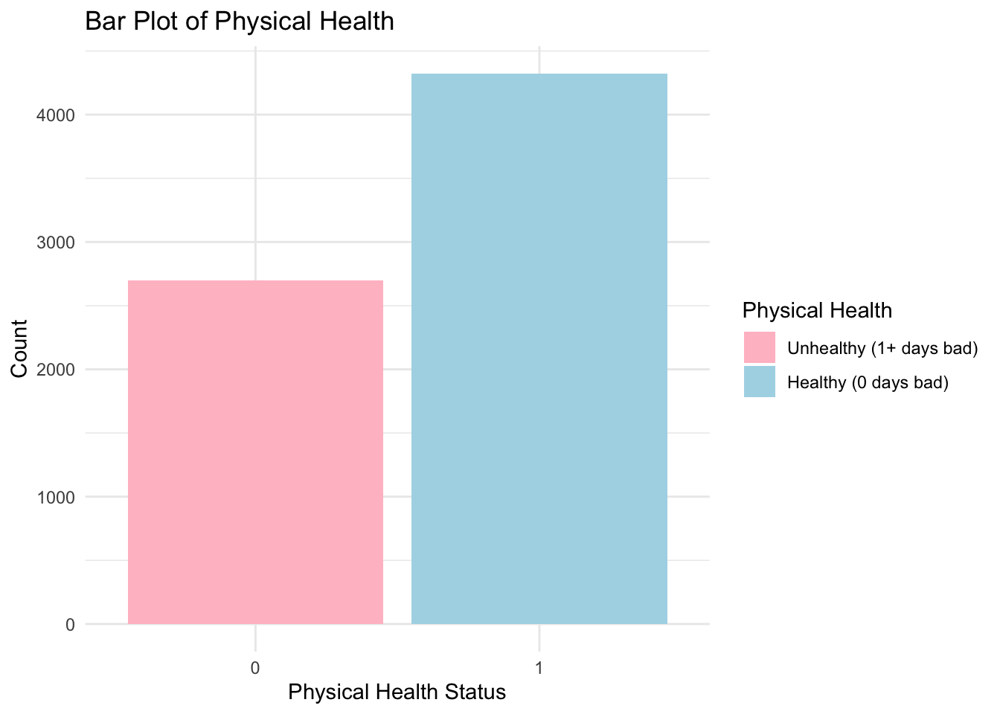
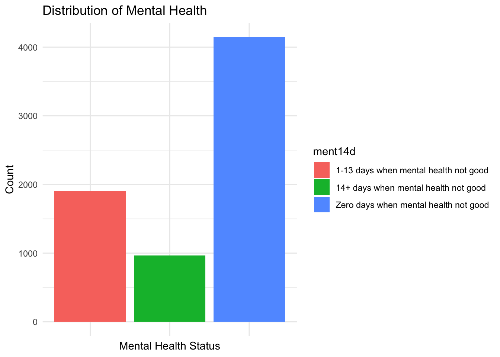
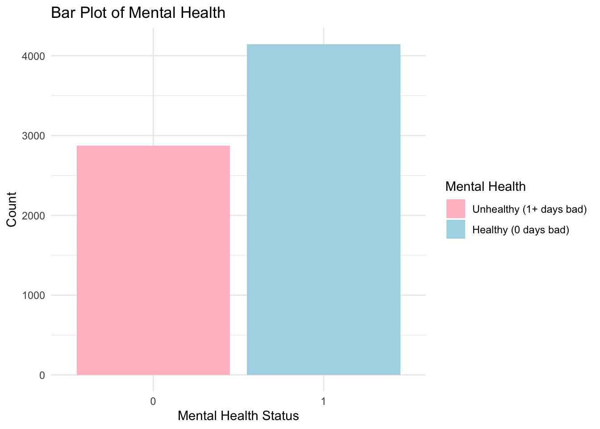

Data Analysis - Health
Data Importing and Cleaning
Visit report for detailed steps on how the data is cleaned.
brfss_22 = read_csv("NYSDOH_BRFSS_Survey_Data_2022.csv")|>
janitor::clean_names()
cleaned_df =
brfss_22 |>
filter(complete.cases(imprace, educag, incomg1, strsmeal_sa, genhlth, diabete4, ment14d, phys14d),
!str_detect(genhlth, "Not Sure|Refused"),
!str_detect(strsmeal_sa, "Not"))|>
select(imprace, educag, incomg1, strsmeal_sa, genhlth, diabete4, ment14d, phys14d)
cleaned_df =
cleaned_df |>
mutate(
income = case_when(
incomg1 %in% c("Less than $15,000", "$25,000 to < $35,000", "$35,000 to < $50,000") ~"<50,000",
incomg1 == "$50,000 to < $100,000" ~ "50,000 ~ 100,000",
incomg1 %in% c ("$100,000 to < $200,000" , "$200,000 or more") ~ ">100,000",
TRUE ~ NA_character_),
education = case_when(
educag == "Did not graduate High School" ~ "Less than high school",
educag == "Graduated High School" ~ "High school or GED",
educag == "Attended College or Technical School" ~ "Some post-high school",
educag == "Graduated from College or Technical School" ~ "College graduate"
),
food_insecure = case_when(
strsmeal_sa %in% c("Rarely","Sometimes","Usually", "Always") ~ 1,
strsmeal_sa == "Never" ~ 0),
health = case_when(
genhlth %in% c("Good", "Very good", "Excellent") ~ 1,
genhlth %in% c("Fair", "Poor") ~ 0),
physical_health = case_when(
phys14d %in% c("Zero days when physical health not good") ~ 1,
phys14d %in% c("1-13 days when physical health not good", "14+ days when physical health not good") ~ 0),
mental_health = case_when(
ment14d %in% c("Zero days when mental health not good") ~ 1,
ment14d %in% c("1-13 days when mental health not good", "14+ days when mental health not good") ~ 0),
diabete = case_when(
diabete4 %in% c("No") ~0,
diabete4%in% c("Yes") ~ 1)
)|>
filter(!is.na(income), !is.na(education), !is.na(physical_health), !is.na(mental_health), !is.na(diabete))|>
select(-incomg1, -educag, -strsmeal_sa, -diabete4)We are interested in understanding the associations between food insecurity and its potential impacts on various health outcomes, including general health, physical health, mental health, and diabetes. For all regression analyses, logistic regression was utilized, and the calculated odds ratios (ORs) were presented to interpret the relationships between variables.
Key Health Factors Distribution
General Health
Using Original genhlth Variable
cleaned_df |>
mutate(genhlth = factor(genhlth, levels = c("Poor", "Fair", "Good", "Very good", "Excellent"))) |>
ggplot(aes(x = genhlth, fill = genhlth))+
geom_bar() +
labs(
title = "Distribution of General Health",
x = "General Health",
y = "Count"
) +
theme_minimal()
Using the original genhlth variable
defined in the BRFSS dataset, this bar chart visualizes the distribution
of general health responses among individuals categorized into five
levels: Poor, Fair,
Good, Very Good, and
Excellent. The largest group is those who reported
their health as “Very Good,” comprising the highest count, followed
closely by individuals reporting “Good” health. The category “Excellent”
ranks third, with a moderate number of respondents. A smaller number of
individuals rated their health as “Fair,” while “Poor” health is the
least common category. The chart highlights a trend where most
individuals perceive their health positively, with the majority
clustering around “Very Good” and “Good” ratings, and relatively fewer
reporting “Fair” or “Poor” health.
Using Binary Variable health
cleaned_df |>
ggplot(aes(x = factor(health), fill = factor(health))) +
geom_bar() +
labs(
title = "Bar Plot of Health",
x = "Health Status",
y = "Count",
fill = "Health"
) +
scale_fill_manual(values = c("0" = "pink", "1" = "lightblue"),
labels = c("Unhealthy (1+ days bad)", "Healthy (0 days bad)")
)+
theme_minimal()
We categorized general health into a binary variable for our regression analysis, with status Good + Very good + Excellent as healthy, and Fair + Poor as unhealthy. The plot demonstrates levels of general health distribution. The majority of individuals are in the “Good” category (1), as reflected by the much taller blue bar. Conversely, fewer individuals are categorized as having “Poor” (0), corresponding to the shorter pink bar. This indicates a predominantly healthy population in the dataset.
Physical Health
Using Original phys14d Variable
cleaned_df |>
ggplot(aes(x = phys14d, fill = phys14d))+
geom_bar() +
labs(
title = "Distribution of Physical Health",
x = "Physical Health",
y = "Count"
) +
theme_minimal() +
theme(axis.text.x=element_blank())
Using the original phys14d variable
defined in the BRFSS dataset, this bar chart visualizes the distribution
of physical health status based on self-reported days of poor physical
health over the past 14 days. The blue bar represents individuals who
reported no days of poor physical health, indicating a significant
majority. The red bar accounts for those who experienced 1 to 13 days of
poor physical health, while the green bar represents individuals with 14
or more days of poor physical health, suggesting chronic physical health
challenges. This distribution highlights the varying degrees of physical
health within the population.
Using Binary Variable
physical_health
cleaned_df |>
ggplot(aes(x = factor(physical_health), fill = factor(physical_health))) +
geom_bar() +
labs(
title = "Bar Plot of Physical Health",
x = "Physical Health Status",
y = "Count",
fill = "Physical Health"
) +
scale_fill_manual(values = c("0" = "pink", "1" = "lightblue"),
labels = c("Unhealthy (1+ days bad)", "Healthy (0 days bad)")
)+
theme_minimal()
We categorized physical health into a binary variable for our regression analysis, with status Zero days when physical health not good as healthy, and 1-13 days when physical health not good + 14+ days when physical health not good as unhealthy. The blue bar corresponds to individuals who reported having 0 days of poor physical health, categorized as “Healthy”. The pink bar corresponds to individuals who reported having 1 or more days of poor physical health, categorized as “Unhealthy”. The chart highlights that the majority of the population maintains good physical health, with only a smaller fraction reporting significant physical health challenges.
Mental Health
Using Original ment14d Variable
cleaned_df |>
ggplot(aes(x = ment14d, fill = ment14d))+
geom_bar() +
labs(
title = "Distribution of Mental Health",
x = "Mental Health Status",
y = "Count"
) +
theme_minimal() +
theme(axis.text.x=element_blank())
Using the original ment14d variable
defined in the BRFSS dataset, this bar chart illustrates the
distribution of mental health status based on the number of days
individuals reported poor mental health over the past 14 days. Similar
to the pattern observed in physical health, the majority of individuals
(blue bar) reported zero days of poor mental health. The red bar
represents those who experienced 1 to 13 days of poor mental health,
while the green bar accounts for individuals with 14 or more days of
poor mental health, indicating potential chronic mental health
challenges. This distribution emphasizes the prevalence of good mental
health among the population, while also highlighting a smaller group
with significant mental health difficulties.
Using Binary Variable
mental_health
cleaned_df |>
ggplot(aes(x = factor(mental_health), fill = factor(mental_health))) +
geom_bar() +
labs(
title = "Bar Plot of Mental Health",
x = "Mental Health Status",
y = "Count",
fill = "Mental Health"
) +
scale_fill_manual(values = c("0" = "pink", "1" = "lightblue"),
labels = c("Unhealthy (1+ days bad)", "Healthy (0 days bad)")
)+
theme_minimal()
We categorized mental health into a binary variable, adopting a similar approach to the coding of physical health. Individuals who reported zero days when mental health was not good were classified as “healthy,” while those reporting 1-13 days when mental health was not good or 14+ days when mental health was not good were grouped as “unhealthy.” The blue bar (healthy mental health) is taller than the pink bar, indicating the majority of individuals reported 0 days of poor mental health.
Diabetes (a binary variable)
cleaned_df |>
ggplot(aes(x = "", fill = factor(diabete))) +
geom_bar(width = 1, stat = "count") +
coord_polar("y") +
labs(
title = "Pie Chart of Diabetes",
fill = "Diabetes"
) +
scale_fill_manual(
values = c("0" = "pink", "1" = "lightblue"),
labels = c("No Diabetes", "Has Diabetes")
) +
theme_void()
The chart clearly shows a significant imbalance, with a much larger proportion of participants being free from diabetes compared to those who have diabetes. This highlights that the prevalence of diabetes in this dataset is relatively low.
Regression Analysis
Is Food Insecure Associated With General Health?
Odds Ratio
logit_health =
glm(health ~ food_insecure, data = cleaned_df, family = binomial)
exp_health = exp(cbind(OR=coef(logit_health),confint(logit_health)))
knitr::kable(exp_health)| OR | 2.5 % | 97.5 % | |
|---|---|---|---|
| (Intercept) | 9.120567 | 8.2603859 | 10.0975500 |
| food_insecure | 0.414545 | 0.3580959 | 0.4798409 |
Confidence Interval
ci_general = as.data.frame(exp_health)
ci_general =
ci_general |>
rownames_to_column("Variable") |>
filter(Variable != "(Intercept)") |>
ggplot(aes(y = Variable, x = OR, xmin = `2.5 %`, xmax = `97.5 %`)) +
geom_pointrange() +
geom_vline(xintercept = 1, linetype = "dashed", color = "red") +
labs(
title = "Odds Ratios with 95% Confidence Intervals",
x = "Odds Ratio (OR)",
y = "General Health Category"
) +
theme_minimal() +
theme(axis.text.y = element_text(size = 12))
ci_general
Individuals who are food insecure have approximately 58.5% lower odds (OR = 0.415, 95% CI: 0.358–0.480) of having good health compared to those who are not food insecure, holding all else constant. This suggests that food insecurity is significantly associated with worse general health outcomes. Food insecurity emerges as a strong risk factor for poor general health. This could be due to the limited availability of nutritious food, leading to a higher prevalence of diet-related illnesses such as obesity, hypertension, and chronic conditions.
Because this result shows that food insecure is a potential risk factor for general health of individuals, we want to further explore the association between food insecure with physical health and mental health, separately.
Is Food Insecure Associated With Physical Health?
Odds Ratio
logit_physical =
glm(physical_health ~ food_insecure, data = cleaned_df, family = binomial)
exp_physical = exp(cbind(OR=coef(logit_physical),confint(logit_physical)))
knitr::kable(exp_physical)| OR | 2.5 % | 97.5 % | |
|---|---|---|---|
| (Intercept) | 2.040483 | 1.9148756 | 2.1753398 |
| food_insecure | 0.552611 | 0.4962017 | 0.6153929 |
Confidence Interval
ci_physical = as.data.frame(exp_physical)
ci_physical =
ci_physical |>
rownames_to_column("Variable") |>
filter(Variable != "(Intercept)") |>
ggplot(aes(y = Variable, x = OR, xmin = `2.5 %`, xmax = `97.5 %`)) +
geom_pointrange() +
geom_vline(xintercept = 1, linetype = "dashed", color = "red") +
labs(
title = "Odds Ratios with 95% Confidence Intervals",
x = "Odds Ratio (OR)",
y = "Physical Health Category"
) +
theme_minimal() +
theme(axis.text.y = element_text(size = 12))
ci_physical
Individuals who are food insecure have approximately 44.7% lower odds (OR = 0.553, 95% CI: 0.496–0.615) of having good physical health compared to those who are not food insecure, holding all else constant. The results are statistically significant, indicating a robust relationship between food insecurity and physical health. Poor physical health among food-insecure individuals may result from inadequate nutrition, increased stress levels, or reduced access to healthcare resources.
Is Food Insecure Associated With Mental Health?
Odds Ratio
logit_mental =
glm(mental_health ~ food_insecure, data = cleaned_df, family = binomial)
exp_mental = exp(cbind(OR=coef(logit_mental),confint(logit_mental)))
knitr::kable(exp_mental)| OR | 2.5 % | 97.5 % | |
|---|---|---|---|
| (Intercept) | 2.0000000 | 1.8772750 | 2.1317058 |
| food_insecure | 0.4027289 | 0.3615144 | 0.4484921 |
Confidence Interval
ci_mental = as.data.frame(exp_mental)
ci_mental =
ci_mental |>
rownames_to_column("Variable") |>
filter(Variable != "(Intercept)") |>
ggplot(aes(y = Variable, x = OR, xmin = `2.5 %`, xmax = `97.5 %`)) +
geom_pointrange() +
geom_vline(xintercept = 1, linetype = "dashed", color = "red") +
labs(
title = "Odds Ratios with 95% Confidence Intervals",
x = "Odds Ratio (OR)",
y = "Mental Health Category"
) +
theme_minimal() +
theme(axis.text.y = element_text(size = 12))
ci_mental
Individuals who are food insecure have approximately 59.7% lower odds (OR = 0.403, 95% CI: 0.362–0.448) of having good mental health compared to those who are not food insecure, holding all else constant. This strong association highlights the significant mental health burden food insecurity places on individuals.
The stress of uncertain food access likely exacerbates mental health conditions, including anxiety and depression. Food insecurity could also interact with other socioeconomic stressors, amplifying its effects on mental health. Results show that food insecure have impacts on both individuals’ physical and mental health, separately. Then we move on to explore how food insecure affects diabetes which is a main outcome of malnutrition.
Is Food Insecure Associated With Diabetes
Odds Ratio
logit_diabete =
glm(diabete ~ food_insecure, data = cleaned_df, family = binomial)
exp_diabete = exp(cbind(OR=coef(logit_diabete),confint(logit_diabete)))
knitr::kable(exp_diabete)| OR | 2.5 % | 97.5 % | |
|---|---|---|---|
| (Intercept) | 0.1209741 | 0.1097044 | 0.1330763 |
| food_insecure | 1.3123230 | 1.1189138 | 1.5368343 |
Confidence Interval
ci_diabete = as.data.frame(exp_diabete)
ci_diabete =
ci_diabete |>
rownames_to_column("Variable") |>
filter(Variable != "(Intercept)") |>
ggplot(aes(y = Variable, x = OR, xmin = `2.5 %`, xmax = `97.5 %`)) +
geom_pointrange() +
geom_vline(xintercept = 1, linetype = "dashed", color = "red") +
labs(
title = "Odds Ratios with 95% Confidence Intervals",
x = "Odds Ratio (OR)",
y = "Diabete Status"
) +
theme_minimal() +
theme(axis.text.y = element_text(size = 12))
ci_diabete
Individuals who are food insecure have approximately 31.2% higher odds (OR = 1.312, 95% CI: 1.119–1.537) of having diabetes compared to those who are not food insecure, holding all else constant. This association indicates a notable link between food insecurity and diet-related chronic diseases. Food insecurity often leads to reliance on low-cost, calorie-dense but nutrient-poor foods, increasing the risk of diabetes and other metabolic conditions.